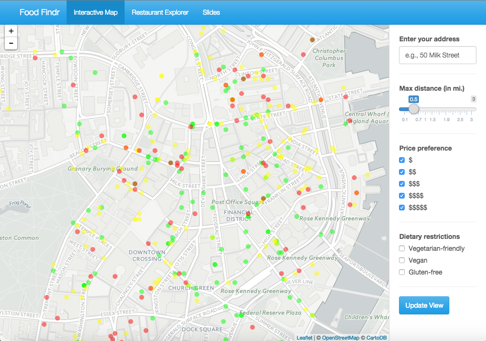

Data Science Apps
foodfindr

Interactive map of predicted health of Boston restaurants. Built using Python, R, Shiny, and AWS.
School SelectR

Creates a list of colleges that best matches user criteria. Built using R and Shiny.
IAT State Map

Visualizes Implicit Association Test data over 10 years. Built using R and D3.js.
Wizarding Network of Harry Potter

Visualizes character connections in the Harry Potter Universe. Built using R and sigma.js.
babynameR

Visualizes the popularity of baby names over time. Built using R and Shiny.